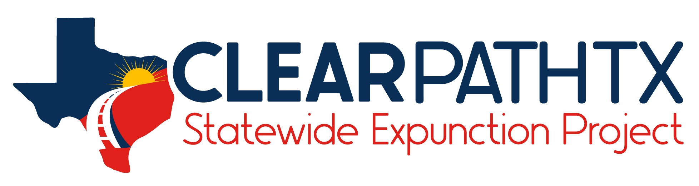

Texas Statewide Event
July 31 and Aug 1, 2026
Free Legal Help · Across Texas
About the Event
The Statewide Expunction Clinic Day is a free, two-day event bringing together legal aid attorneys from across Texas to help eligible residents clear their criminal records through expunctions and nondisclosures — removing barriers to employment, housing, education, and professional licensing.
This event is presented by Clear Path Texas, a partnership of Texas legal aid organizations dedicated to making record-clearing accessible to communities across the state.
An expunction is a complete removal of an arrest or criminal record so no one can view it. If you expunge your record, you have the right to deny the arrest ever occurred — except while questioned under oath in a criminal proceeding.
A nondisclosure order seals part of your criminal record, stopping public entities — courts, clerks, law enforcement, and prosecutors — from sharing the sealed offense. You do not have to disclose it on most job applications, though certain state agencies and licensing boards may still view it.
You may qualify if your case was dismissed, you were acquitted, or you completed deferred adjudication for certain offenses. Eligibility depends on your specific case.
Get free one-on-one time with a legal aid attorney, learn if you qualify, and take the first steps toward clearing your record — at no cost to you.
Yes. All services provided through this event are completely free for income-eligible Texans. There is no catch.
Find self-help guides and additional legal information on expunctions and nondisclosures at Texas Law Help.
Find Your Legal Aid
To apply, select the county where you live. Then choose the legal aid organization listed for your county to begin your application.
You're about to visit TexasLawHelp.org, a separate website operated by another organization. Clear Path Texas isn't responsible for its content. Would you like to continue?